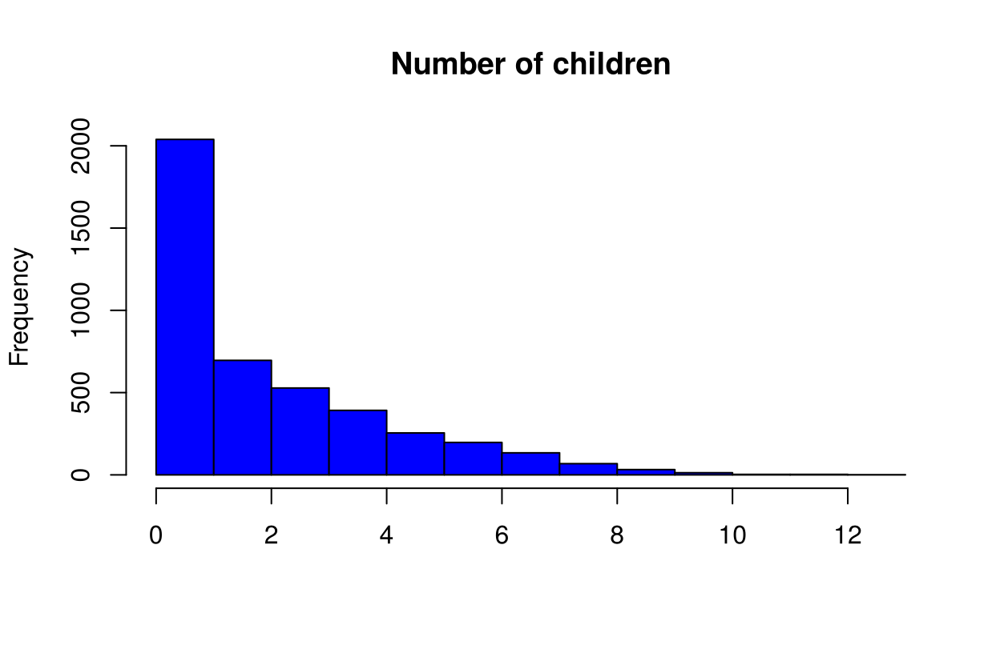
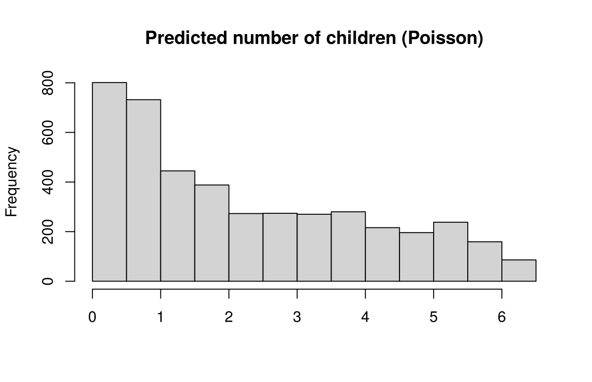
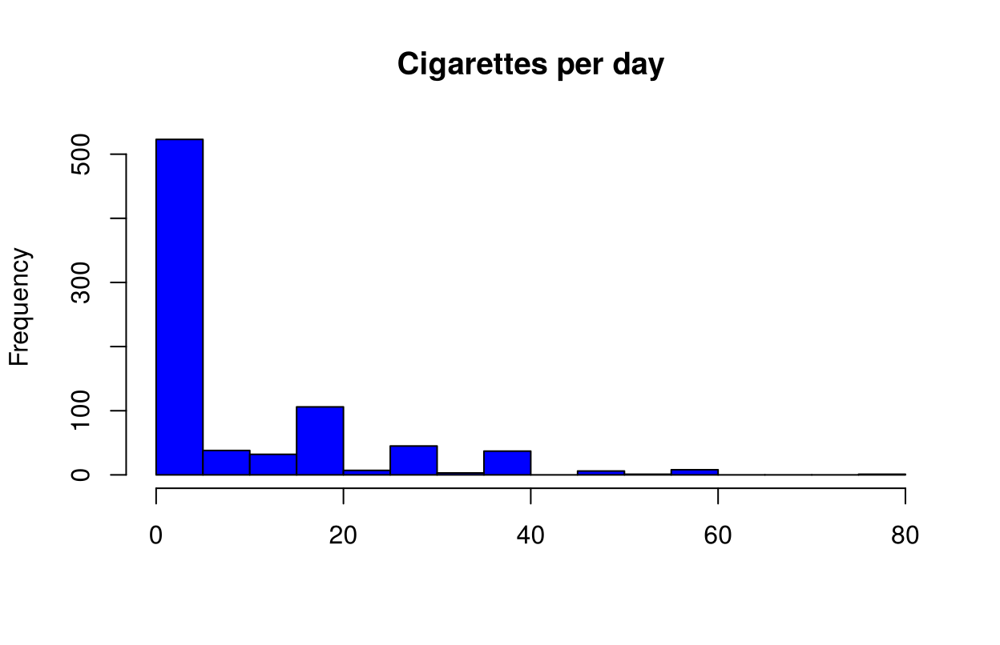

Count outcomes take the values \(0, 1, 2, \dots\), often with many zeros. The models below all specify the conditional mean as \[
E(y \mid x) = \exp(x\beta),
\] so that \(100\cdot\beta_j\) is approximately the percentage change in \(E(y \mid x)\) for a one-unit increase in \(x_j\).
Poisson regression assumes \(y \mid x\) is Poisson, which implies equidispersion: \(\text{Var}(y \mid x) = E(y \mid x)\). The Poisson MLE of \(\beta\) is consistent even if the distribution is not Poisson, as long as the mean is correctly specified; the standard errors then need to be robust.
Negative binomial (NB2) regression allows overdispersion: \(\text{Var}(y \mid x) = \mu + \mu^2/\theta\) with \(\mu = E(y \mid x)\). As \(\theta \to \infty\) it becomes the Poisson model. (R uses \(\theta\); Stata reports \(\alpha = 1/\theta\).)
Hurdle model: a binary model (here logit) decides whether \(y = 0\) or \(y > 0\); a truncated-at-zero count model describes the positive counts.
Zero-inflated Poisson (ZIP): a mixture of a point mass at zero (“always zero”, modelled by a logit) and a Poisson distribution, which can also produce zeros.
4.1 Example: Number of children
The data set fertil2 contains 4361 women in Botswana (Wooldridge 2020). The outcome is the number of children ever born.
#> nbr.val nbr.null nbr.na min max range
#> 4.361000e+03 1.132000e+03 0.000000e+00 0.000000e+00 1.300000e+01 1.300000e+01
#> sum median mean SE.mean CI.mean.0.95 var
#> 9.890000e+03 2.000000e+00 2.267828e+00 3.364784e-02 6.596688e-02 4.937426e+00
#> std.dev coef.var
#> 2.222032e+00 9.798060e-01
hist(fertil2$children, breaks =15, col ="blue", main ="Number of children", xlab ="")

The sample variance (4.94) is about twice the mean (2.27). This unconditional overdispersion does not imply overdispersion conditional on the regressors, which is what matters.
4.1.1 Poisson regression
Regressors: whether the household has a TV and electricity, whether the woman was ever married, urban residence, education, age and age squared. We divide age squared by 100 (agesq); otherwise the hurdle and zero-inflated models below run into numerical problems and report no standard errors for the age terms.
fertil2$agesq <- fertil2$age^2/100poissonreg <-glm(children ~ tv + electric + evermarr + urban + educ + age + agesq,data = fertil2, family = poisson)summary(poissonreg)
#>
#> Call:
#> glm(formula = children ~ tv + electric + evermarr + urban + educ +
#> age + agesq, family = poisson, data = fertil2)
#>
#> Coefficients:
#> Estimate Std. Error z value Pr(>|z|)
#> (Intercept) -5.374829 0.162867 -33.001 < 2e-16 ***
#> tv -0.144705 0.047388 -3.054 0.00226 **
#> electric -0.120535 0.038839 -3.103 0.00191 **
#> evermarr 0.314751 0.024447 12.875 < 2e-16 ***
#> urban -0.086055 0.021649 -3.975 7.04e-05 ***
#> educ -0.021664 0.002913 -7.437 1.03e-13 ***
#> age 0.337331 0.009937 33.949 < 2e-16 ***
#> agesq -0.411583 0.014528 -28.331 < 2e-16 ***
#> ---
#> Signif. codes: 0 '***' 0.001 '**' 0.01 '*' 0.05 '.' 0.1 ' ' 1
#>
#> (Dispersion parameter for poisson family taken to be 1)
#>
#> Null deviance: 10076.1 on 4357 degrees of freedom
#> Residual deviance: 3908.8 on 4350 degrees of freedom
#> (3 observations deleted due to missingness)
#> AIC: 13010
#>
#> Number of Fisher Scoring iterations: 5
For example, one more year of education lowers the expected number of children by about 2.2 percent, holding the other variables fixed.
Predicted counts:
poissonpredict <-predict(poissonreg, fertil2, type ="response")head(poissonpredict)
hist(poissonpredict, main ="Predicted number of children (Poisson)", xlab ="")

4.1.2 Negative binomial regression
With glm() and family = negative.binomial(theta = 1) we fix \(\theta = 1\). glm.nb() from MASS also estimates \(\theta\).
library(MASS)negbinreg <-glm(children ~ tv + electric + evermarr + urban + educ + age + agesq,data = fertil2, family =negative.binomial(theta =1))summary(negbinreg)
#>
#> Call:
#> glm(formula = children ~ tv + electric + evermarr + urban + educ +
#> age + agesq, family = negative.binomial(theta = 1), data = fertil2)
#>
#> Coefficients:
#> Estimate Std. Error t value Pr(>|t|)
#> (Intercept) -6.223997 0.145332 -42.826 < 2e-16 ***
#> tv -0.168537 0.046934 -3.591 0.000333 ***
#> electric -0.119146 0.038994 -3.055 0.002261 **
#> evermarr 0.317213 0.024868 12.756 < 2e-16 ***
#> urban -0.081089 0.023026 -3.522 0.000433 ***
#> educ -0.024452 0.003063 -7.984 1.81e-15 ***
#> age 0.391782 0.009426 41.562 < 2e-16 ***
#> agesq -0.491600 0.014466 -33.983 < 2e-16 ***
#> ---
#> Signif. codes: 0 '***' 0.001 '**' 0.01 '*' 0.05 '.' 0.1 ' ' 1
#>
#> (Dispersion parameter for Negative Binomial(1) family taken to be 0.2949456)
#>
#> Null deviance: 3953.5 on 4357 degrees of freedom
#> Residual deviance: 1724.7 on 4350 degrees of freedom
#> (3 observations deleted due to missingness)
#> AIC: 15328
#>
#> Number of Fisher Scoring iterations: 5
negbinreg1 <-glm.nb(children ~ tv + electric + evermarr + urban + educ + age + agesq,data = fertil2)negbinreg1$theta
#> [1] 20686.81
The estimated \(\theta\) is very large (and glm.nb() warns that its iteration limit is reached). There is no overdispersion conditional on the regressors, and the negative binomial model reduces to the Poisson model. Compare the coefficients:
We use hurdle() from the package pscl. The output has two parts: the count model for the positive counts and the zero hurdle model (logit for \(y > 0\)).
library(pscl)hurdlereg <-hurdle(children ~ tv + electric + evermarr + urban + educ + age + agesq,data = fertil2, dist ="poisson", zero.dist ="binomial", link ="logit")summary(hurdlereg)
#>
#> Call:
#> hurdle(formula = children ~ tv + electric + evermarr + urban + educ +
#> age + agesq, data = fertil2, dist = "poisson", zero.dist = "binomial",
#> link = "logit")
#>
#> Pearson residuals:
#> Min 1Q Median 3Q Max
#> -2.4265 -0.5850 -0.1552 0.5774 3.9290
#>
#> Count model coefficients (truncated poisson with log link):
#> Estimate Std. Error z value Pr(>|z|)
#> (Intercept) -5.382542 0.243665 -22.090 < 2e-16 ***
#> tv -0.156099 0.055893 -2.793 0.00523 **
#> electric -0.110071 0.045297 -2.430 0.01510 *
#> evermarr 0.321941 0.028174 11.427 < 2e-16 ***
#> urban -0.098073 0.024274 -4.040 5.34e-05 ***
#> educ -0.027205 0.003316 -8.204 2.33e-16 ***
#> age 0.333462 0.014068 23.703 < 2e-16 ***
#> agesq -0.399368 0.019710 -20.262 < 2e-16 ***
#> Zero hurdle model coefficients (binomial with logit link):
#> Estimate Std. Error z value Pr(>|z|)
#> (Intercept) -12.47422 0.56981 -21.892 < 2e-16 ***
#> tv -0.16972 0.18996 -0.893 0.37161
#> electric -0.24661 0.15926 -1.548 0.12150
#> evermarr 0.64655 0.11769 5.494 3.93e-08 ***
#> urban -0.10479 0.09815 -1.068 0.28572
#> educ -0.03848 0.01458 -2.639 0.00832 **
#> age 0.88136 0.04163 21.174 < 2e-16 ***
#> agesq -1.20297 0.06881 -17.482 < 2e-16 ***
#> ---
#> Signif. codes: 0 '***' 0.001 '**' 0.01 '*' 0.05 '.' 0.1 ' ' 1
#>
#> Number of iterations in BFGS optimization: 13
#> Log-likelihood: -6378 on 16 Df
hurdlepredict <-predict(hurdlereg, fertil2, type ="response")head(hurdlepredict)
In zeroinfl(), the zero-inflation part is a logit for the probability of being an “always zero” observation. A positive coefficient there means a higher probability of a zero, the opposite direction to the zero hurdle part of the hurdle model.
ZIP <-zeroinfl(children ~ tv + electric + evermarr + urban + educ + age + agesq,data = fertil2, dist ="poisson", link ="logit")summary(ZIP)
#>
#> Call:
#> zeroinfl(formula = children ~ tv + electric + evermarr + urban + educ +
#> age + agesq, data = fertil2, dist = "poisson", link = "logit")
#>
#> Pearson residuals:
#> Min 1Q Median 3Q Max
#> -2.5070 -0.5785 -0.1291 0.5512 5.9363
#>
#> Count model coefficients (poisson with log link):
#> Estimate Std. Error z value Pr(>|z|)
#> (Intercept) -4.366374 0.198408 -22.007 < 2e-16 ***
#> tv -0.146681 0.048655 -3.015 0.00257 **
#> electric -0.113746 0.039827 -2.856 0.00429 **
#> evermarr 0.304121 0.024550 12.388 < 2e-16 ***
#> urban -0.085565 0.021998 -3.890 0.00010 ***
#> educ -0.021594 0.002958 -7.300 2.88e-13 ***
#> age 0.279585 0.011813 23.667 < 2e-16 ***
#> agesq -0.331121 0.017010 -19.466 < 2e-16 ***
#>
#> Zero-inflation model coefficients (binomial with logit link):
#> Estimate Std. Error z value Pr(>|z|)
#> (Intercept) 25.3395 3.6112 7.017 2.27e-12 ***
#> tv -0.5429 1.0508 -0.517 0.6054
#> electric -0.1267 0.7331 -0.173 0.8627
#> evermarr -1.0118 0.8373 -1.208 0.2269
#> urban 0.3293 0.3749 0.878 0.3798
#> educ 0.1650 0.0892 1.849 0.0644 .
#> age -2.1134 0.3125 -6.763 1.36e-11 ***
#> agesq 3.1586 0.4819 6.555 5.57e-11 ***
#> ---
#> Signif. codes: 0 '***' 0.001 '**' 0.01 '*' 0.05 '.' 0.1 ' ' 1
#>
#> Number of iterations in BFGS optimization: 32
#> Log-likelihood: -6440 on 16 Df
ZIPpredict <-predict(ZIP, fertil2, type ="response")head(ZIPpredict)
#> nbr.val nbr.null nbr.na min max range
#> 807.0000000 497.0000000 0.0000000 0.0000000 80.0000000 80.0000000
#> sum median mean SE.mean CI.mean.0.95 var
#> 7010.0000000 0.0000000 8.6864932 0.4830202 0.9481260 188.2800034
#> std.dev coef.var
#> 13.7215161 1.5796382
hist(smoke$cigs, breaks =15, col ="blue", main ="Cigarettes per day", xlab ="")

Here the outcome is very overdispersed: the variance is 188, the mean 8.7.
4.2.1 Poisson regression
poissonreg2 <-glm(cigs ~log(cigpric) +log(income) + restaurn + white + educ + age + agesq,data = smoke, family = poisson)summary(poissonreg2)
#>
#> Call:
#> glm(formula = cigs ~ log(cigpric) + log(income) + restaurn +
#> white + educ + age + agesq, family = poisson, data = smoke)
#>
#> Coefficients:
#> Estimate Std. Error z value Pr(>|z|)
#> (Intercept) 0.396451 0.613947 0.646 0.518
#> log(cigpric) -0.105961 0.143390 -0.739 0.460
#> log(income) 0.103727 0.020281 5.115 3.14e-07 ***
#> restaurn -0.363606 0.031222 -11.646 < 2e-16 ***
#> white -0.055201 0.037420 -1.475 0.140
#> educ -0.059423 0.004256 -13.961 < 2e-16 ***
#> age 0.114257 0.004969 22.994 < 2e-16 ***
#> agesq -0.137082 0.005695 -24.070 < 2e-16 ***
#> ---
#> Signif. codes: 0 '***' 0.001 '**' 0.01 '*' 0.05 '.' 0.1 ' ' 1
#>
#> (Dispersion parameter for poisson family taken to be 1)
#>
#> Null deviance: 15821 on 806 degrees of freedom
#> Residual deviance: 14752 on 799 degrees of freedom
#> AIC: 16239
#>
#> Number of Fisher Scoring iterations: 6
The Poisson model fits the many zeros poorly. predprob() gives the predicted probability of each count for every observation; averaging over the sample gives the predicted distribution, which we can compare with the observed share of zeros.
The hurdle and ZIP models reproduce the share of zeros, the negative binomial model comes close, and the Poisson model misses it completely. In terms of the log likelihood and the information criteria, the negative binomial model fits best here, because the positive counts are also strongly overdispersed.
Wooldridge, Jeffrey M. 2020. Introductory Econometrics: A Modern Approach. 7th ed. Boston: Cengage.